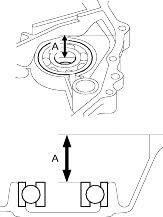
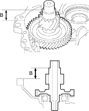

- Measure the distance between the flywheel housing surface and the ball bearing as shown, then note the measurement (Measurement A).

- Install the secondary gear shaft on the transmission housing.
- Measure the distance between the transmission housing surface and the thrust shim mounting surface of the secondary gear shaft as shown, then note the measurement (Measurement B).

- Calculate 25 x 35 mm thrust shim thickness by following formula so that the secondary gear shaft thrust clearance comes into the tolerance.
Secondary Gear Shaft Thrust Clearance:
STANDARD: 0-0.15 mm (0-0.006 in.)
FORMULA:
25 x 35 mm Thrust Shim Thickness:
= Measurement A-Measurement B + Flywheel Housing Gasket Thickness: 0.5 mm (0.020 in.)
Example:
Measurement A: 32.7 mm (1.287 in.)
Measurement B: 30.1 mm (1.185 in.)
25 x 35 mm Thrust Shim Thickness
= 32.7 mm (1.287 in.)-30.1 mm (1.185 in.) + 0.5 mm (0.020 in.)
= 3.1 mm (0.122 in.)
You can select the thickness between 3.1 mm (0.122 in.) and 2.95 mm (0.116 in.).
The thrust shim can be used C or D in this case.
- Select the 25 x 35 mm thrust shim from the following table.
THRUST SHIM, 25 x 35 mm
No. Part Number Thickness A 90551-P4V-000 2.8 mm (0.110 in.) B 90552-P4V-000 2.9 mm (0.114 in.) C 90553-P4V-000 3.0 mm (0.118 in.) D 90554-P4V-000 3.1 mm (0.122 in.) E 90555-P4V-000 3.2 mm (0.126 in.) F 90556-P4V-000 3.3 mm (0.130 in.) G 90557-P4V-000 3.4 mm (0.134 in.) H 90558-P4V-000 3.5 mm (0.138 in.) I 90559-P4V-000 3.6 mm (0.142 in.) J 90560-P4V-000 3.7 mm (0.146 in.) K 90561-P4V-000 3.8 mm (0.150 in.)